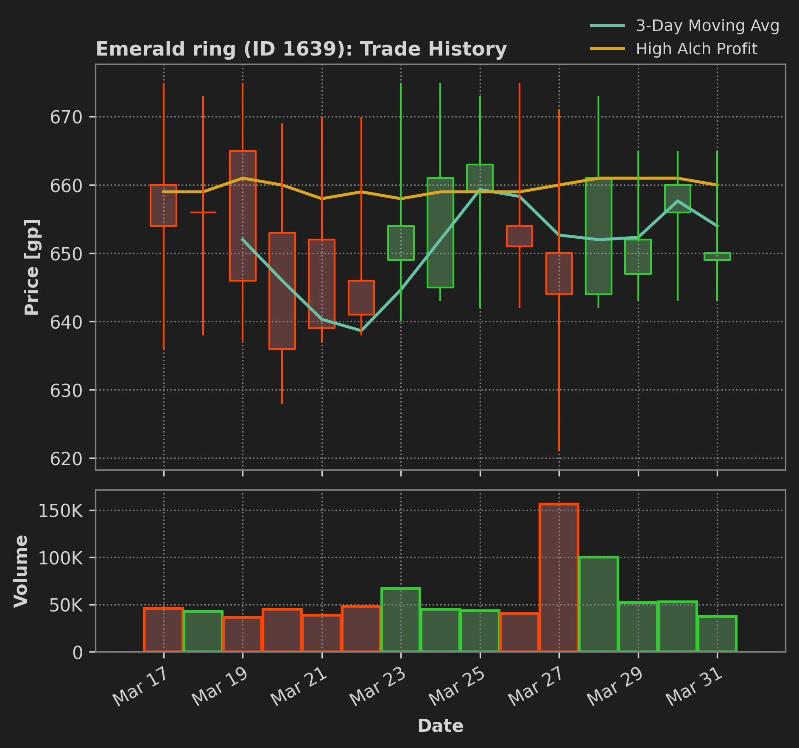

Fun Personal Projects
Outside of my academic work, I enjoy building tools and exploring datasets for fun. Check out some of my recent work!
OSRS GE Seer
I am developing the GE Seer: a Python package with tools for scraping, structuring, and analyzing market data from Old School RuneScape (OSRS), an MMORPG from 2001 that is still popular, astonishingly. The Grand Exchange (GE) is an in-game marketplace where OSRS players buy and sell in-game items for in-game currency. I've been playing OSRS since third grade, and I can vividly remember losing in-game currency as a kid trying to flip items. I want to apply my data analysis skills to explore GE market dynamics and maybe make some gold pieces along the way.
The Seer queries the OSRS Wiki price API to build its datasets from archival GE data. My current efforts are focused on API wrappers and dataset generation for item-level historical prices and traded volumes, with the goal of developing models to algorithmically guide trading strategies on the exchange. I am developing this code in a public GitHub repository, and I plan to share more details about the project and its progress in the future. Check out the repository here!
If you have ideas for using the Seer or you would like to use it for your own project, please feel free to connect.
